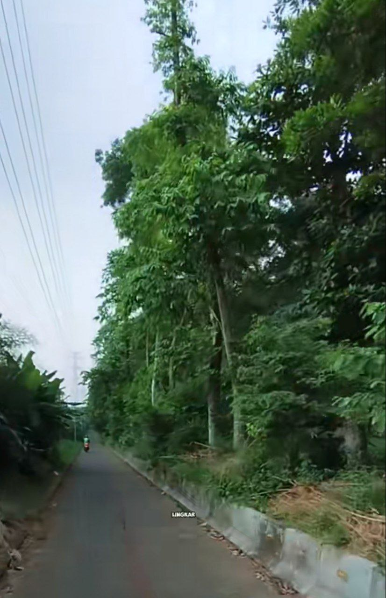
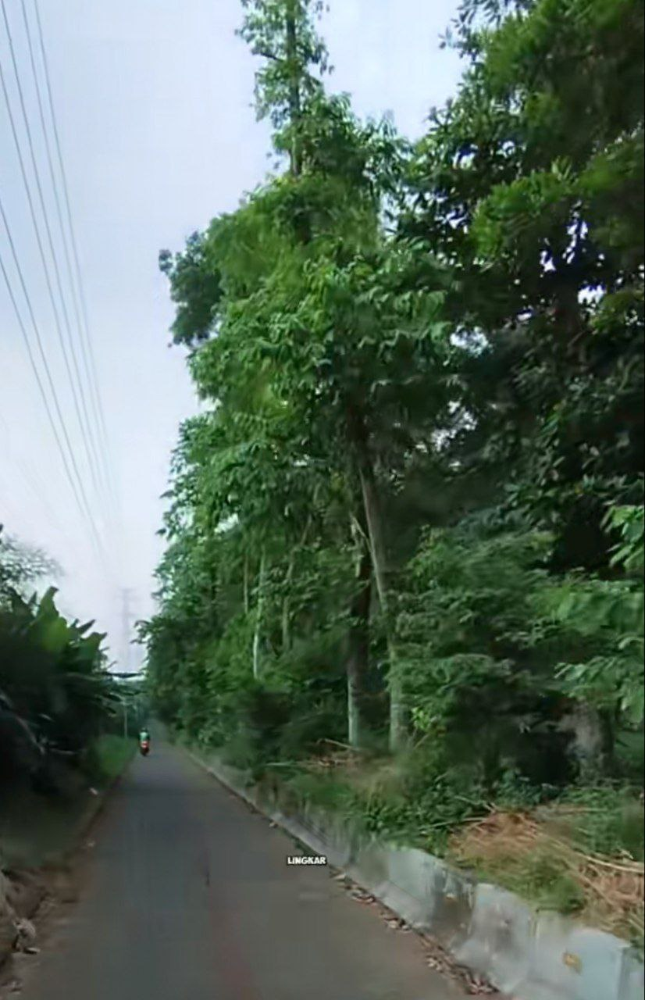
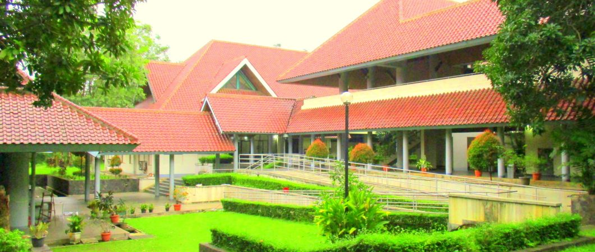
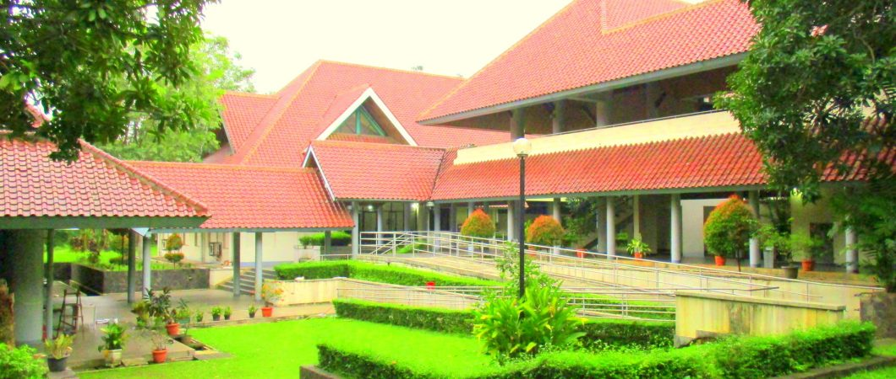

UNIVERSITAS INDONESIA

Program Pendidikan Vokasi

Fakultas Ilmu Budaya

Fakultas Ilmu Sosial dan Politik

Fakultas Hukum

Fakultas Teknik

Fakultas Ilmu Komputer

Fakultas Matematika dan Ipa

Fakultas Kedokteran

Fakultas Kedokteran Gigi

Fakultas Farmasi

Fakultas Ilmu Keperawatan

Fakultas Psikologi

Fakultas Ekonomi dan Bisnis

Fakultas Kesehatan Masyarakat

Fakultas Ilmu Administrasi


.jpg)
.jpg)
 

.jpg) 

Comments
FufuFafa 9 years ago
Saya waktu berkunjung ke salah satu Fakultas UI, dan tanpa saya sengaja, saya bertemu dengan sosok perempuan berambut panjang.
Mas Narji 10 hours ago
Saya waktu berkunjung di Fakultas Vokasi, saya melihat sosok bayangan putih di air mancur vokasi dan menyanyikan sebuah lagu.
Andi 2 days ago
Waktu malam hari, saya merasa ada sesuatu yang aneh di Fakultas Kedokteran. Apakah benar ada cerita di sana?
Siti 5 hours ago
Saya mendengar cerita dari teman saya, apakah itu hanya mitos?
Rani 30 minutes ago
Saya pernah melihat sosok di Gedung Rektorat! Menyeramkan!
Jojon 30 minutes ago
Saya pernah liat juga, ada gondoruwo di vokasi, gede banget sumpah. Pas itu juga saya ngeliat ada tuyul lagi muter muter buat nyari duit